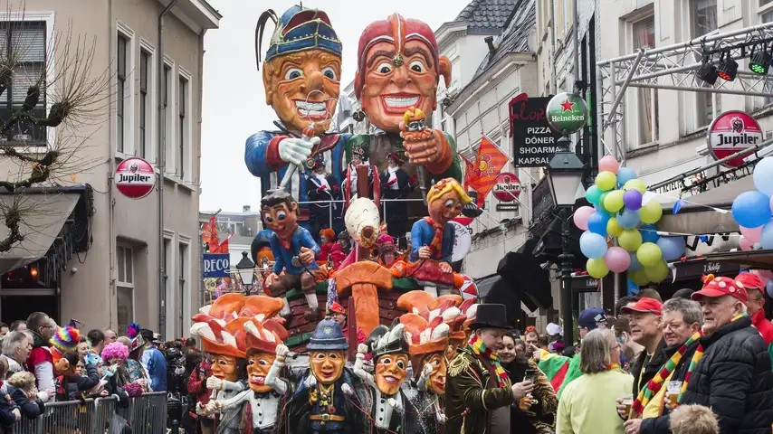

Carnavalsweekend: drukke binnensteden en feestvierders uit de Randstad
 Dit weekend ging carnaval feestelijk van start in Brabantse en Limburgse steden. In carnavalsstad Oeteldonk (Den Bosch) was het zelfs zo druk in de binnenstad, dat bezoekers werden gevraagd om het feest op een andere plek te vieren. Zondagmiddag gaf carnavalsprins Amadeiro het startsein om het feest in Den Bosch te vieren. Het werd zo druk in het centrum van de Brabantse stad, dat de gemeente carnavalsvierders opriep om niet meer naar de binnenstad te komen.